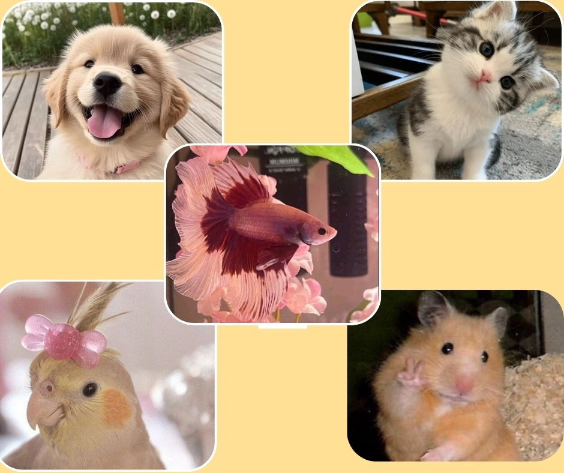
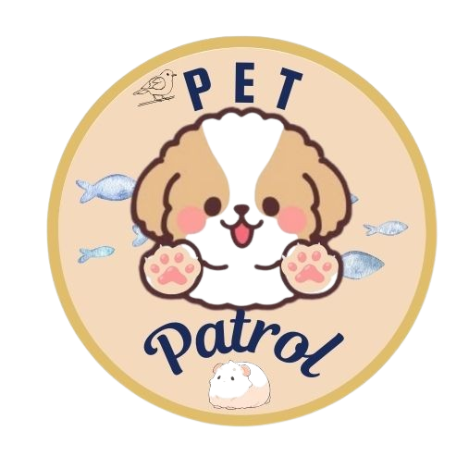
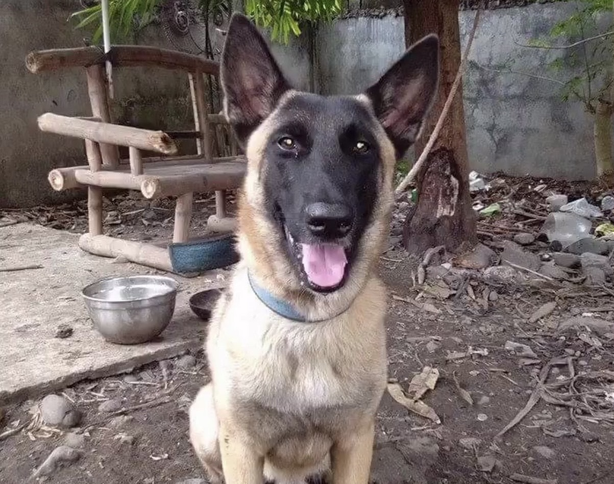
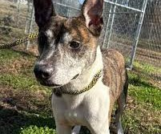
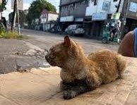
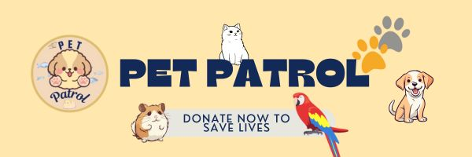

ALL LIVES MATTER
A variety of lovely pets that need your care and affection
Be the hero they’ve been waiting for. Your future best friend is just one step away.


🐾 Pet Patrol | Where every pet finds a familyBe the hero they’ve been waiting for. Your future best friend is just one step away.

.jpg)
In 2011, Kabang jumped in front of a motorcycle to save two young girls, resulting in the loss of her upper snout. She survived, became a global symbol of bravery, and even received medical care in the U.S. funded by international donations.

A Belgian Malinois serving with the Philippine Army, Sergio sniffed out IEDs and protected troops during operations. He saved countless lives and was honored with a military burial.

Shadow, a volunteer dog, helped sniff survivors and bodies during the aftermath of Typhoon Yolanda in 2013.

In Quezon City, Tisay meowed loudly and persistently during a house fire in 2022, waking her family just in time to escape. The family credits her for saving their lives.
.png)
Browse our list of adorable pets looking for a loving home.
Fill out an easy adoption form and tell us about yourself.
.png)
Once approved, bring your new best friend home with love.

Your donations provide food, shelter, and medical care to pets in need. Every small act of kindness brings them closer to a forever family. Help us make a difference today!
Donate Now!